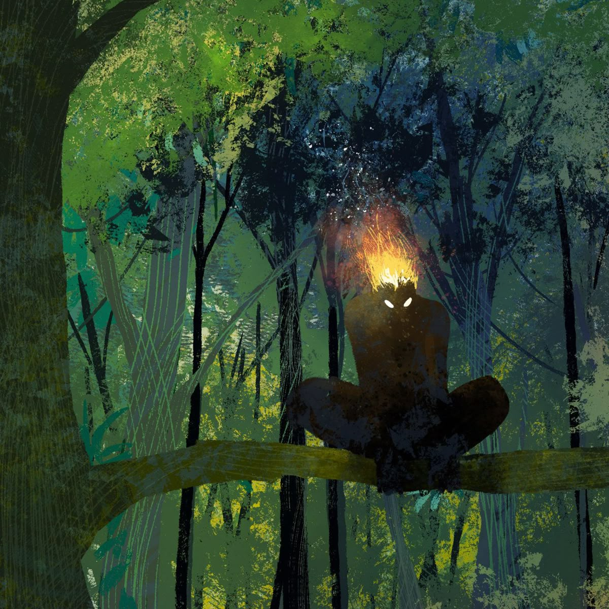
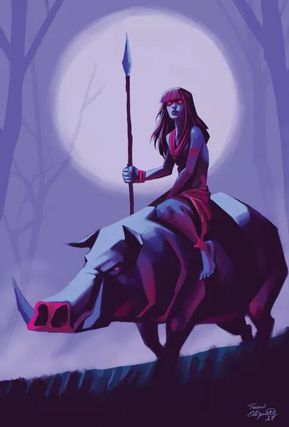
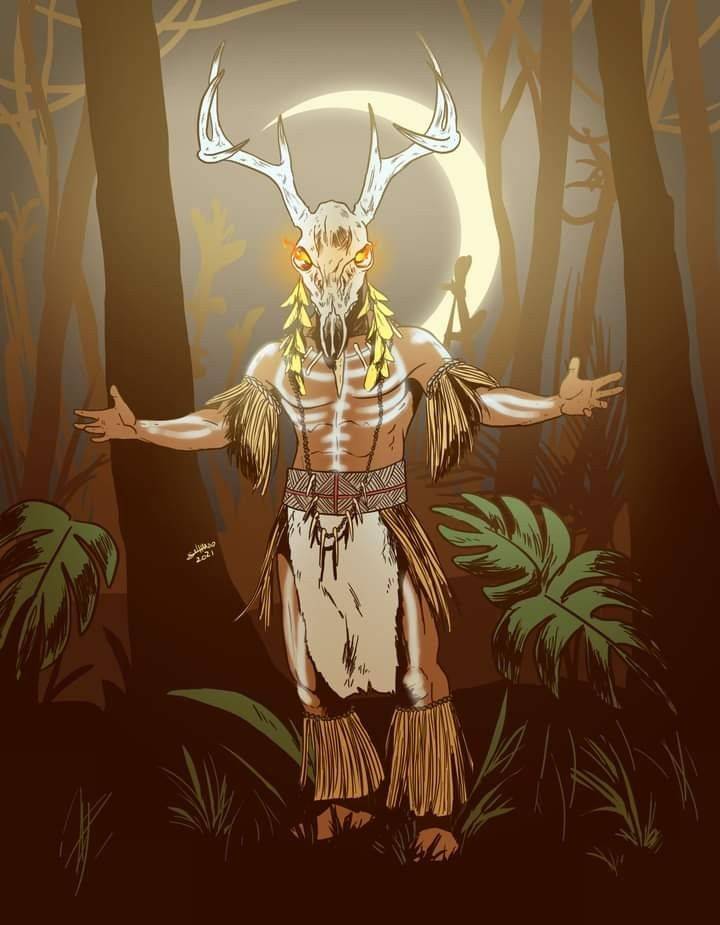

Poderes por leveis
Habilidades de prole evoluem por estágios e consomem os leveis atuais do player no Arcane.
Ler regraArquivo vivo de proles, entidades e encantados
Um site de apoio para RPG no Discord, feito para organizar sistemas de poderes, fichas, regiões e narrativas inspiradas no folclore brasileiro.
Como usar
Habilidades de prole evoluem por estágios e consomem os leveis atuais do player no Arcane.
Ler regraEntidades, humanos marcados e criaturas podem ganhar fichas no estilo wiki, com história e poderes.
Abrir catálogoFlorestas, rios, cidades e ruínas guardam pactos antigos, maldições e territórios de entidades.
Explorar regiõesEnredo base
No começo, os humanos caminhavam junto da terra: rios, sementes, trovões e bichos não eram cenário, eram parentes antigos. Com o tempo, entidades se aproximaram demais dos mortais, gerando filhos, pactos e linhagens capazes de tocar o mundo invisível.
Essa proximidade trouxe prosperidade, mas também abriu espaço para inveja, ruína e disputas entre encantados. Anhangá viu nessa fraqueza uma chance de reorganizar o sagrado pela força, e a Era X começa justamente quando os herdeiros desses pactos precisam escolher que tipo de lenda vão se tornar.
Poderes & habilidades
Regra central
Os poderes de prole pedem níveis de 1 até 10. Quando o player atinge o level exato necessário para upar uma habilidade, ele gasta esses leveis e volta para a estaca zero no Arcane, pedindo para um administrador retirar a quantia.
O player pode guardar leveis para gastar de uma só vez. Exemplo: juntar level 15 para comprar dois estágios, um de 5 leveis e outro de 10 leveis.
Ver sistema completoMapa narrativo

Território de guardiões da floresta, trilhas que mudam de lugar e pactos quebrados.

Região de caçadores, espíritos de proteção animal e testes para quem pisa armado.

Área corrompida por medo, culpa e promessas feitas no escuro.